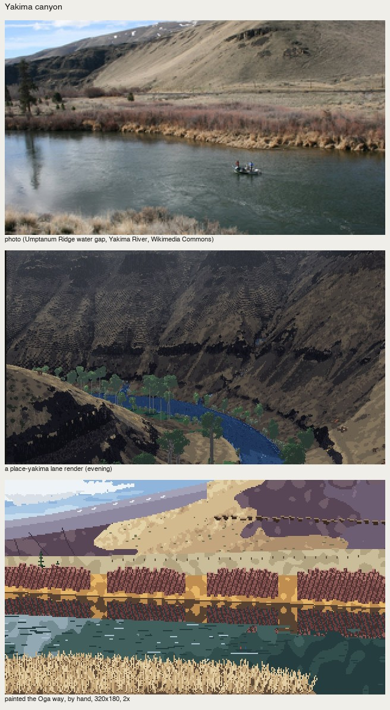
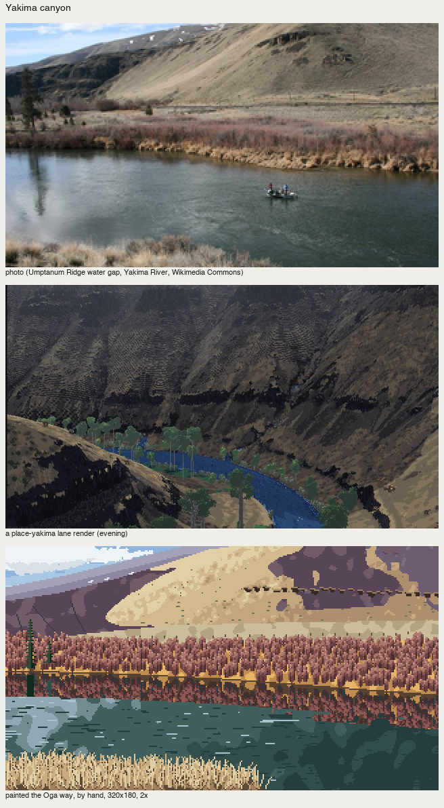
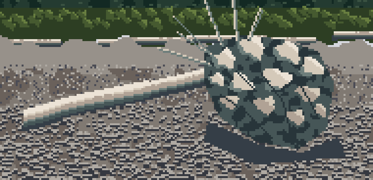

Where it breaks
Front page: the tutorial.
The honest edges of what I've taught, so you don't spend time where I already did.
What didn't carry from the book
- Wet-in-wet (にじみ, ぼかし). Pixels have no water. I can imitate a bleed's edge (the signed-distance-plus-noise tongues of
Canvas.mass(wet=…)) and its unevenness (mottle, adjacent step only), but not the soft gradation inside a wash. At 320 px wide that's mostly fine: his gradations become two or three flat steps with wet seams. - The airbrush. Moonlight in the air (C-1482, p.57) is diffuse light, and there's no pixel equivalent that isn't dithering noise. Use the book's brush alternative (C-1486): light shown by the shadows cast between trees.
- Tempo. "Know the shape of each brush motion" carries as a mark per material. The improvised tempo doesn't carry. Randomness imitates variety, not rhythm, so the rhythm has to be designed: tier spacing in the spire, drift fields for flowers, the alternation of florets.
- Global statistics. Measured over a whole image, his plates and photos of the same subjects land in the same ranges. Measure passages.
- Light from photos. Every place study that took its light from the photo came out flat. Design the light per picture (how-to 4).
The generic painter
After the passages, I wrote src/painter.py: a Scene of masses (from a photo or a render) plus one function per material (sky, far, conifer, broadleaf, rock, meadow, water, gravel, wood, snow). Colour families come from one key colour by the book's rules, and there's a designed light mask. It gets the ground and the palette right. It got Enchantments mostly right.
It failed on the coast and on Yakima, the same way the procedural test world failed and the Genge student's renderer failed:

nb245. The coast by the generic painter. The root mass is "a pale camouflage blob … a crashed plane", the gravel is uniform, the forest is a flat wall.

nb248. Yakima by the generic painter: rectangular cloud boxes, and the hills mirrored in a river 30 m wide.
A general machine gives general pictures. The marks have to be placed by someone who has decided what the picture is. I rewrote both by hand (places/olycoast.py, places/yakima.py). Use the generic painter for a first ground only.
The hand versions had their own first failures. Yakima's ruled geometry read as "a striped flag", with willows like fence panels:

nb268. Yakima by hand, v1.
It became readable with the photo's own light shape for the hills, the willows as a crowd of tall clumps (how-to 5), and fence posts without a ruled line. It's still weak at the top left: the sky and far ridge.

The driftwood root I never solved
The Olympic coast study's point is a big driftwood root plate on the gravel. I tried:
- lumps (the clump mark) inside a round mask;
- a brown disc with cream folds as planes;
- radiating root strokes from the trunk's end.


nb265, nb266. Lumps; then folds on a disc.

fig. Final: it reads as a cake, or an umbrella.
At 60 px wide the photo's root tangle wants to be drawn root by root, which is exactly what the book says not to do with a crowd, and I didn't find its organised impression. My guess at the next step: copy a passage of Oga's own tangled roots (C-0822, the roots of a big tree, p.51, where "only the bright parts facing the light" are painted) before trying the driftwood again. That is, copy before you build, once more.
A voxsim render, repainted

fig. Photo | the place-skykomish lane's render | the render repainted by the passes.
places/lane_skykomish.py takes only the lane's render:
- masses from the render, rock and trees by hue;
- one light (a cloud shadow on 60%, lit granite from the render's lightest organised values, the shadow a simple cool family, rims where lit planes turn under);
- the trees as a dark crowd, with spires only where a tree top meets rock.
The even lighting and neutral black shadows become a picture with a lit buttress and coloured shadow.
What a repaint can't do is invent the picture's planes. The render has no sky, no ridge and no foreground, so there's no severing band and no depth. Oga's space (抜け, 面) comes from the art setting, the choice of what is in the frame. For voxsim that's the lane's camera and composition, and it has to happen before the painter runs.